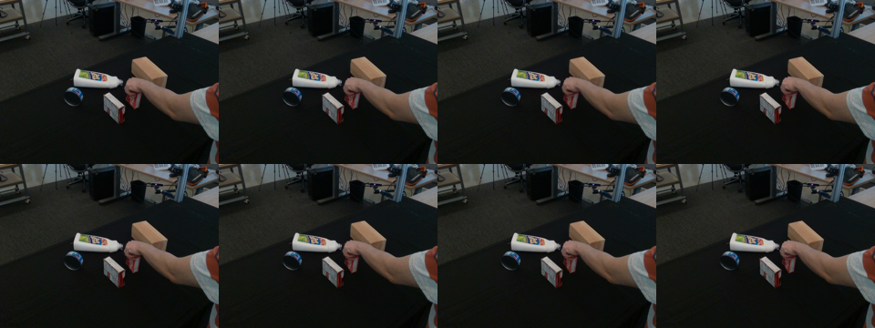
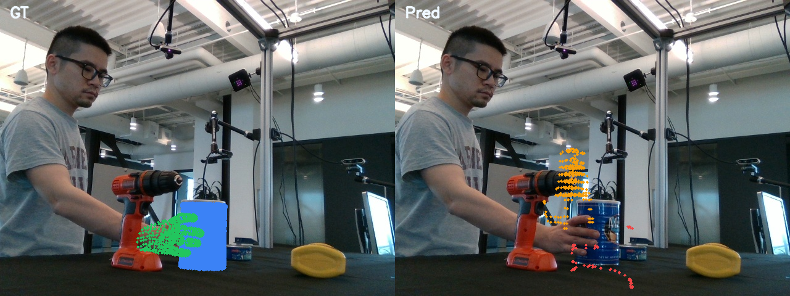
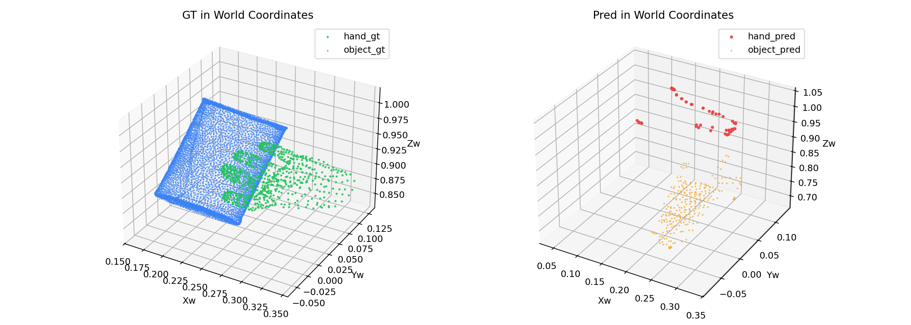
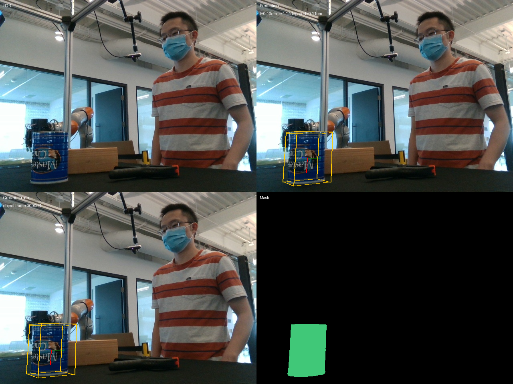

Why End-to-End HOI Reconstruction?
Existing methods tackle hand reconstruction, object pose, and scene geometry separately. This creates error accumulation and misalignment when combining outputs. We propose a unified pipeline that jointly reasons about hands, objects, and scenes.
Output: scene point clouds, camera poses, hand mesh (L/R), object mesh — all in a shared world coordinate system.
Isolated Pipelines
Hand recon (HaWoR, HaMeR) and object pose (FoundationPose) run independently with no shared scene understanding.
No Joint Scene Context
Without scene point clouds and camera geometry, hand-object spatial relationships cannot be properly resolved.
Coordinate Misalignment
Each method uses its own coordinate space. Post-hoc alignment introduces errors and prevents end-to-end training.


From Validation to Training Closed-Loop
Phase 1 independently validated both branches. Phase 2 achieved the first end-to-end training overfit with 99.997% loss reduction in 200 steps.
Phase 1: Independent Branch Validation



Training Closed-Loop Validated
200-step overfit on single DexYCB frame. Token bridge learns to reconstruct SLat through STream3R decoder. Loss: 1836.53 → 0.051.
Before Optimization

After Optimization (200 steps)

Pre: Scene Comparison

Post: Scene Comparison

Three-Lane Baseline Comparison
Benchmarks split by task: object pose estimation, hand reconstruction, and joint hand-object reconstruction. HOI3R aims to outperform all three lanes with a single model.
FoundationPose
HaWoR vs Dyn-HaMeR
HaWoR significantly stronger. Dyn-HaMeR retained as weak baseline.
MagicHOI
Official metrics shown. Our evaluator alignment in progress.
